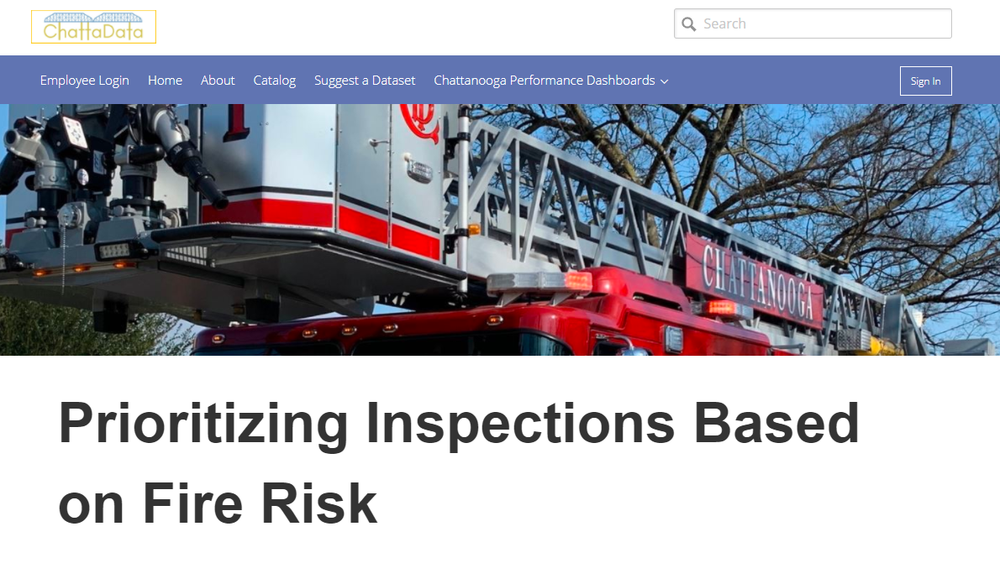
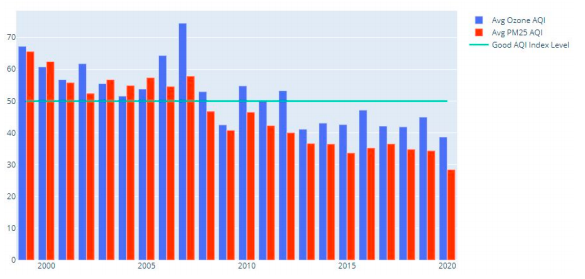

I worked on this project as a part of our Chattalytics program in the Performance Management and Open Data Office in the city. The goal was to develop a decision support tool to help prioritize fire inspections done by the Chattanooga Fire Department. To do this, I developed a machine learning model based on previous fire calls and parcel attributes. I also combined this with non predictive variables to add more context to the tool and better assist the decision making of the fire department. For more information check out the write up done by our office or the story done by local media.

This is a project I worked on for a class focussed on analyzing big data using Hadoop. Chattanooga historically had poor air quality, and I wanted to see how air quality had changed over time in the region. To do this, I used the EPA’s Air Quality System API to download the data. I then used Hive, Spark, and Hadoop to analyze data. To help answer and explain the project questions I used Plotly for data visualization. Here’s a link to the project paper I wrote for more information on the project.